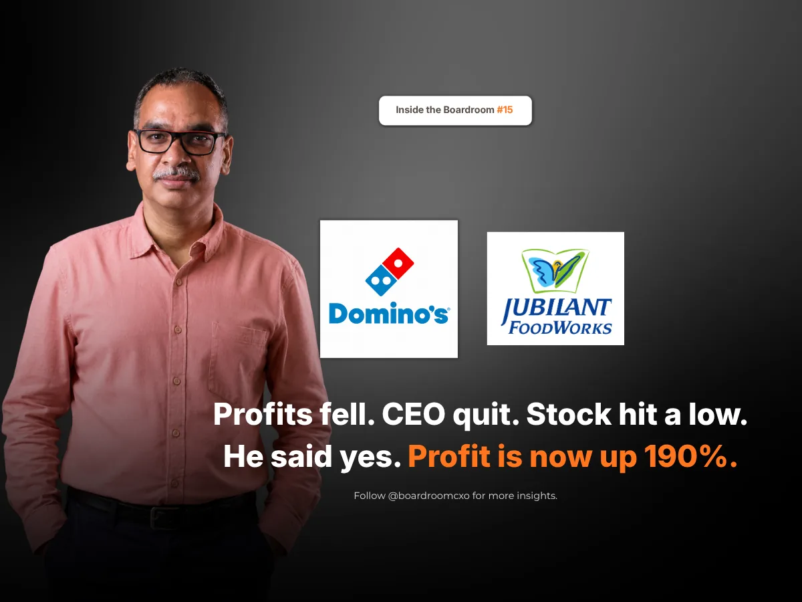

Key Takeaways
- Sameer Khetarpal joined Jubilant FoodWorks in September 2022, and by the September 2025 quarter net profit rose 190 percent to ₹186 crore, helped by a one-time gain.
- Facing rising input costs, Khetarpal cut prices and held them broadly flat for two years, while doubling down on Domino's own delivery fleet and app.
- The skill a turnaround needs matters more than the category on the résumé, so boards should not screen leaders only by industry background.
In September 2022, a man who had spent six and a half years building grocery and delivery businesses at Amazon walked into India's largest foodservice company and inherited a pizza chain that was quietly losing its pull.
Not a collapse. A slow erosion.
Rising Costs, an Unlikely Résumé
People were still ordering from Domino's. But demand was softening, and the ticket was being held up by price increases rather than appetite. Inflation was pushing cheese and vegetable costs higher, total expenses rose more than 18 percent in a single quarter, and the push into smaller towns was thinning margins further. The share price had slumped to a 52-week low in March 2022, when the previous chief executive resigned.
Sameer Khetarpal had never run a restaurant company. Hindustan Unilever. GE Capital. Partner at McKinsey. Then Amazon Fresh, Amazon Food, and Amazon Pharmacy.
He Cut Prices When the Textbook Said Raise Them
Every input cost was rising. The textbook answer was to raise prices. Most chief executives facing that maths would have done exactly that.
He did not. He cut prices instead, and then held them, keeping menu pricing broadly flat for the next two years while food costs kept climbing. He doubled down on Domino's own delivery fleet rather than leaning on aggregators, promising 20 minutes and pulling demand back onto the brand's own app. And he kept opening stores in small cities while the margins there still hurt.
The Turnaround, By the Numbers
By the September 2025 quarter, net profit was up 190 percent to ₹186 crore, helped by a one-time gain, and sales were up 19.7 percent to ₹2,340 crore. Domino's India had grown like-for-like for seven quarters in a row. FY26 group revenue closed at ₹9,512.5 crore across a global network of 3,636 stores, Domino's India accounting for the largest share of that footprint.
And Domino's became the first quick service brand in India to reach 500 cities. Not the biggest cities. The five hundredth one.
Every crisis makes raising the price look like the only answer. Sometimes the way out is to make the thing worth buying again.
The Boardroom Read
Khetarpal's path to this seat was unconventional by restaurant industry standards: an FMCG background, a stint at GE Capital, a consulting career, and an e-commerce operating record with no food service on the résumé. Boards hiring for a foodservice turnaround often default to candidates from inside the category. What he brought instead was pricing discipline from FMCG and a delivery-first operating model from Amazon, applied to a business that needed both.
The lesson for a hiring board is not that outsiders always win. It is that the skill a turnaround actually needs, in this case pricing conviction and last-mile logistics, matters more than a résumé line that says the candidate has run a chain like this one before.
The category on the résumé matters less than the discipline the business actually needs. Boards that screen candidates only by industry background risk passing on the leader who has already solved the real problem, just somewhere else.
Frequently Asked Questions
Why was Domino's India losing momentum before Sameer Khetarpal took over?
Demand was softening and revenue was being held up by price increases rather than appetite. Cheese and vegetable costs were rising, total expenses rose more than 18% in a single quarter, and the share price had slumped to a 52-week low in March 2022, when the previous chief executive resigned.
What was Sameer Khetarpal's background before Jubilant FoodWorks?
He had never run a restaurant company. He worked at Hindustan Unilever and GE Capital, was a partner at McKinsey, and then ran Amazon Fresh, Amazon Food, and Amazon Pharmacy before joining Jubilant FoodWorks in September 2022.
Why did Sameer Khetarpal cut Domino's prices instead of raising them?
With every input cost rising, the textbook response was to raise menu prices. Khetarpal cut prices instead and held menu pricing broadly flat for the next two years, betting that demand would recover if the product felt worth buying again.
How did Domino's India's delivery strategy change under Sameer Khetarpal?
He doubled down on Domino's own delivery fleet rather than leaning on aggregators, promising 20-minute delivery and pulling demand back onto the brand's own app, while continuing to open stores in small cities even where margins still hurt.
What results has Domino's India posted under Sameer Khetarpal?
By the September 2025 quarter, net profit was up 190% to ₹186 crore, helped by a one-time gain, and sales were up 19.7% to ₹2,340 crore, with like-for-like growth for seven quarters in a row. FY26 group revenue closed at ₹9,512.5 crore across 3,636 stores globally.
What milestone did Domino's India reach under Sameer Khetarpal?
Domino's became the first quick service restaurant brand in India to reach 500 cities, not the biggest cities, the five hundredth one, reflecting the continued push into smaller towns.
Sources
- Jubilant FoodWorks, Earnings Presentation Q4 & FY26, May 2026
- Jubilant FoodWorks, Jubilant FoodWorks Limited Reports Q2FY26 Results, November 2025
- CNBC-TV18, Jubilant FoodWorks Q2 Results: Domino’s like-for-like, order growth lift revenue 20%, November 2025
- Reuters, Domino's India operator posts higher profit on strong online sales, new stores, May 2025
- CNBC-TV18, Jubilant Foodworks Q4 Results: Domino's Like-For-Like growth turns positive after four quarters, May 2024
- Reuters, Focus: The world's cheapest Domino's pizza is in inflation-hit India. It costs $0.60, July 2023
- The Indian Express, Jubilant FoodWorks Q2 profit up 9.7% to Rs 131.5 crore; revenue up 16.6% to Rs 1,301.5 crore, November 2022
- Mint, Sameer Khetarpal is new CEO & MD at Jubilant FoodWorks, May 2022
- Business Standard, Jubilant FoodWorks slumps 15%, hits 52-week low as CEO Pratik Pota resigns, March 2022
Related Reading
Venu Nair Took the Job Nobody Wanted at Shoppers Stop. He Turned It Around in About a Year.
Read → R · 02 Founder Leadership · September 2026He Ran India's Biggest Luggage Company. Then He Bought the Rival One-Tenth Its Size.
Read → R · 03 Founder Leadership · August 2026Bharat Puri Heard About the Cadbury Worms From TV News. He Fixed It in Three Months.
Read →Need a leader whose skillset matters more than their category?
Whether it's pricing discipline from FMCG, delivery operations from e-commerce, or a turnaround record from an adjacent category, we place the leaders who bring the exact capability your business needs, not just the most familiar résumé.
Brief Us on a Mandate See all Sales & Retail roles we fill →